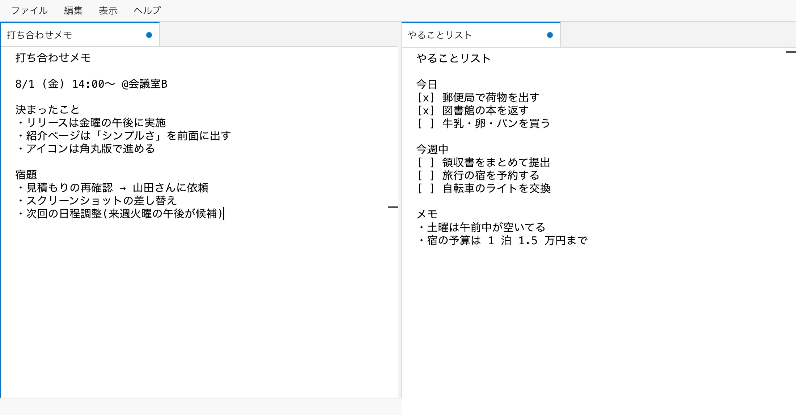

メモ帳の軽さ、
モダンエディタの書き心地。
IDE やコーディング特化のエディタは、メモに使うには機能が多すぎる。 Notecode は、複数カーソルや検索・置換など「書くことに効く編集機能」だけを抜粋して、 メモ帳のような静かな UI に載せた Windows / macOS 向けの軽量テキストエディタです。 日常のメモ・下書き・一時的なテキスト編集のための道具です。

「ちょうどいい」を作った
メモ帳では物足りない。IDE では重すぎる。その間です
標準のメモ帳
軽いが、物足りない
すぐ開けて気楽。でも複数カーソルも、まともな検索・置換もなく、 少し長いテキストになると編集がつらい。
Notecode
メモ帳の気軽さのまま、編集だけ強い
起動は軽く、UI は静か。それでいて複数カーソル・検索・置換・タブ・分割ペインなど、 「書く」に効く機能だけをモダンなエディタから抜粋。
IDE・コード特化エディタ
強力だが、メモには過剰
プロジェクト管理、Git、拡張機能、デバッガ…。開発には必要でも、 メモを 1 枚書くための道具としては機能が多すぎる。
特徴
「メモ帳の軽さ」と「モダンなエディタの編集操作のよさ」の組み合わせ
静かで素直な UI
Windows メモ帳をリスペクトした、余計なものがない画面。開発用エディタとは別の、書くことに集中できる道具です。
モダンな編集体験
エディタ部分には Monaco Editor を採用。複数カーソル、強力な検索・置換など、VS Code に近い入力体験で書けます。
タブと分割ペイン
複数タブと分割ペインに対応。軽いメモ用途でも、最低限の整理をしながら複数のテキストを扱えます。
ファイルを壊さない保存品質
文字コード(UTF-8 / Shift_JIS など)と改行コードを正しく扱い、既存のテキストファイルを壊さず読み書きします。
ダークモード
ライト / ダークのテーマに対応。時間帯や好みに合わせて、目に優しい配色で使えます。
テキストファイルに幅広く対応
.txt / .md / .log / .json / .csv / .tsv などの関連付けに対応。ダブルクリックですぐ開けます。
設計思想
Notecode は統合開発環境を目指しません。テキストを書く・開く・整える・保存する体験に絞り、 Git 連携・ターミナル・拡張機能・シンタックスハイライトなどはあえて搭載しません。 「メモ帳として自然に使えるか」「UI が重くならないか」を基準に、静かなままのエディタであり続けます。